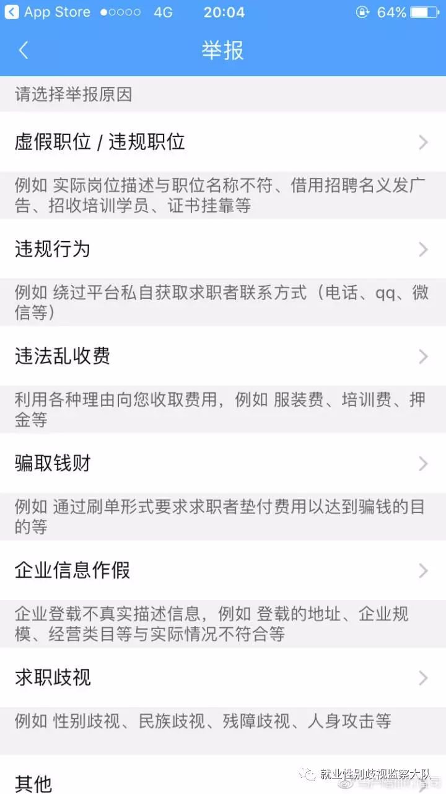

昨天下午，我和一个伙伴与刘明辉老师来到朝阳区劳动监察大队，与智联招聘一方的法务、技术人员就网站的招聘性别歧视现象进行对谈讨论。
只可惜因为技术演示涉及到知识产权和商业机密，对方只愿意跟我本人展开讨论，未能让刘老师和另外一个伙伴参与讨论。先谢过刘老师和伙伴的热情支持。
嘻嘻嘻，与刘老师并肩作战
应对方要求，技术屏蔽、筛查关键词的演示过程这里就不公开了。在审查和筛选的环节，智联招聘确实做了很多工作：
1
在企业发布广告的时候，如果含有性别歧视的词语，该广告是被禁止发布的。同时网站会弹出提示对话框，禁止企业发布性别歧视的词语，并且在不断叠加性别歧视关键词进入筛查词库中；
2
网站有专门的团队会对已发布的招聘信息进行审查，如发现性别歧视的广告会责令企业改正，情节严重屡教不改的企业将会被拉入黑名单；
3
面对涉嫌违法的招聘广告，智联招聘在每一个招聘职位的页面都会有一个举报按钮，举报项目里包含了就业歧视，其中明确标明包含“性别歧视”。

智联招聘举报界面
在对方介绍自己的相关防治工作的时候，我深觉已有的应对措施是远远不够的。这也是智联招聘目前还有性别歧视招聘广告存在的很大原因。在原有的工作基础上，我又提供了几点建议：
1
为了起到警示企业的作用，在弹出的提示对话框中加入具体的违反规定后需付出的违法成本。也让智联招聘一方更明确企业违法后的惩罚措施。
2
设立网站外部的监督员，定时监督智联招聘网上的性别歧视动态，及时反馈给网站并快速解决问题。面对公众的监督，应公开至少一种直接联系的举报投诉方式，例如公开的邮箱，专门接收性别歧视举报，并及时处理。
3
开展文化宣传、内部培训的活动。我希望网站主页可以推出反就业性别歧视广告，表明网站反对就业性别歧视的态度和立场，影响更多的企业和求职者。让企业承担社会责任、遵守法律，求职者可以意识到自己有被公平对待的权利。
对方对以上建议都非常认可，并承诺回去之后跟领导和相关部门进行沟通，把建议的内容尽可能落实。对方非常感谢我的建议，欢迎我成为智联招聘的监督员，一起努力，消除招聘中的显性性别歧视。对方还称智联招聘一直都非常重视女性的职业发展，也非常重视反歧视的工作，这些建议对她们来说非常重要，一定会认真对待。
那就静候佳音喽～～希望有更多合作的可能，反就业性别歧视的队伍又壮大了哇～～